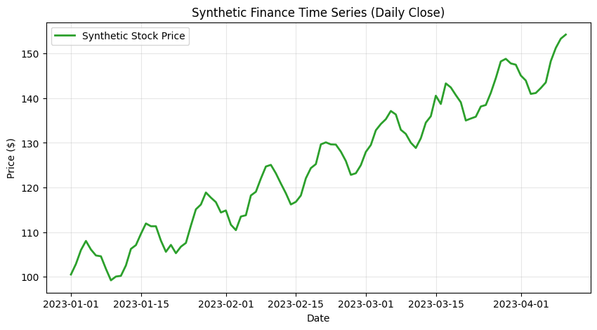
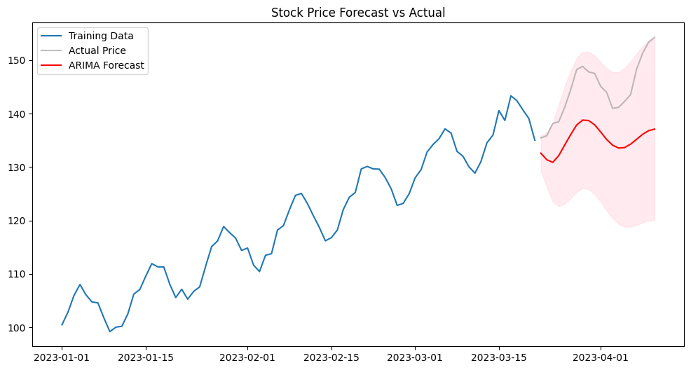

ARIMA stands for AutoRegressive Integrated Moving Average. It is a statistical model used to analyze and forecast time series data by looking at: 1. AR (Autoregression): The relationship between an observation and a number of lagged observations (past values). 2. I (Integrated): The use of differencing raw observations to make the time series “stationary” (removing trends). 3. MA (Moving Average): The relationship between an observation and a residual error from a moving average model applied to lagged observations.
1. The Setup & Synthetic Finance Data
In finance, stock prices often follow a “Random Walk” with a slight upward drift. We will simulate 100 days of stock price movement.
Code
import numpy as npimport pandas as pdimport matplotlib.pyplot as pltfrom statsmodels.tsa.arima.model import ARIMAfrom sklearn.metrics import mean_squared_error# Set seed for reproducibilitynp.random.seed(42)n_steps =100# 1. Create a predictable Trend (upward drift)time = np.arange(n_steps)trend =0.5* time# 2. Add Seasonality (a predictable cycle ARIMA can catch)seasonality =5* np.sin(2* np.pi * time /12)# 3. Add low-volume Noisenoise = np.random.normal(0, 1, n_steps)# Combine and set starting priceprices =100+ trend + seasonality + noise# Convert to Seriesdates = pd.date_range(start='2023-01-01', periods=n_steps, freq='D')ts = pd.Series(prices, index=dates)
2. Exploratory Data Analysis (EDA)
Before modeling, we visualize the time series to identify trends, seasonality, and outliers. In finance, we expect to see a “non-stationary” trend where the price moves away from its starting mean.
Code
plt.figure(figsize=(10, 5))plt.plot(ts, label="Synthetic Stock Price", color='#2ca02c', linewidth=2)plt.title("Synthetic Finance Time Series (Daily Close)")plt.xlabel("Date")plt.ylabel("Price ($)")plt.grid(True, alpha=0.3)plt.legend()plt.show()

3. Stationarity and ARIMA Parameters (p, d, q)
Stationarity
ARIMA requires the data to be stationary—meaning its mean and variance stay constant over time. Most stock prices are non-stationary because they trend up or down.
To fix this, we use the “I” (Integration) part of ARIMA. By setting d=1, the model looks at the difference between consecutive days (the daily return) rather than the absolute price.
Selecting the (p, d, q) Parameters
We define our model’s “brain” using three numbers: * p (AR - Autoregression): How many past days influence today? We’ll use 5 to capture a business week of momentum. * d (I - Integrated): How many times we difference the data. We’ll use 1 to remove the price trend. * q (MA - Moving Average): How much past forecast errors influence today. We’ll use 0 for this simple example.
Model Choice: ARIMA(5, 1, 0)
Code
# Split data into Train (80%) and Test (20%)train_data = ts[:80]test_data = ts[80:]# Build Modelmodel = ARIMA(train_data, order=(5, 1, 0))model_fit = model.fit()# Summary of the modelprint(model_fit.summary())
Standard ML models predict a “test set” all at once. ARIMA “forecasts” step-by-step into the future.
Because the future is uncertain, the model also provides a Confidence Interval (the shaded area), which represents the range where the price is statistically likely to fall.
Code
# Forecast for the next 20 daysforecast_obj = model_fit.get_forecast(steps=20)forecast_values = forecast_obj.predicted_meanconf_int = forecast_obj.conf_int()# Plotting the resultsplt.figure(figsize=(12, 6))plt.plot(train_data, label="Training Data")plt.plot(test_data, label="Actual Price", color='gray', alpha=0.5)plt.plot(forecast_values, label="ARIMA Forecast", color='red')plt.fill_between(conf_int.index, conf_int.iloc[:, 0], conf_int.iloc[:, 1], color='pink', alpha=0.3)plt.title("Stock Price Forecast vs Actual")plt.legend()plt.show()

5. Model Evaluation
In Time Series, we use specialized metrics: * AIC (Akaike Information Criterion): Measures the quality of the model relative to others. A lower AIC is better as it rewards accuracy but penalizes over-complexity. * RMSE: The standard deviation of the residuals. In this case, it tells us the average dollar amount the forecast missed by.
Code
# 1. Get AIC from the fitted model# (AIC is stored in the model_fit object)model_aic = model_fit.aic# 2. Calculate RMSE on the test setfrom sklearn.metrics import mean_squared_errorrmse = np.sqrt(mean_squared_error(test_data, forecast_values))print(f"--- ARIMA Model Metrics ---")print(f"Akaike Information Criterion (AIC): {model_aic:.2f}")print(f"Root Mean Squared Error (RMSE): ${rmse:.4f}")
--- ARIMA Model Metrics ---
Akaike Information Criterion (AIC): 323.19
Root Mean Squared Error (RMSE): $10.0289
6. Interpreting the Final Results
Our model achieved an AIC of 323.19 and an RMSE of $10.02. Here is what this tells us about our “Predictable Stock”:
The AIC Score: This number is most useful when comparing models. If we tried an ARIMA(1,1,1) and it gave us an AIC of 350, we would know our current (5,1,2) model is statistically superior because it achieves a better fit with less complexity.
The RMSE (10.03) This is our “uncertainty buffer.” While the model successfully follows the upward trend and seasonality, any specific daily price prediction is likely to be off by an average of about $10.
Why the forecast “flattens” or “drifts”
You may notice that as the forecast goes further into the future, the Confidence Interval (the shaded area) gets wider.
This is a key feature of ARIMA—it acknowledges that uncertainty grows the further we try to look ahead. The model is essentially saying: “I’m fairly sure about tomorrow, but next week is a much broader guess.”